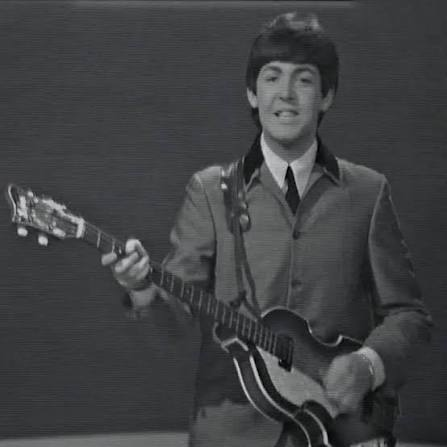

Paul McCartney
Overview
- Born: June 18, 1942
- Instrument(s): Bass, Vocals, Piano, Guitar (Mainly Acoustic Guitar)
- Vocal Range: Tenor (Roughly A2 to B5, Falsetto C6)
- Influences: Little Richard, Elvis Presley

Specific Skills/Contributions
Melodic Genius
Paul McCartney has been widely considered the most prolific melodic songwriter of The Beatles. In comparison to John Lennon, Paul McCartney's melodies tend to move around far more often while still being tasteful. This can be observed in many of his basslines and vocal lines. A textbook example of Paul's incredible melodic vocal songwriting can be seen on Yesterday. Despite sounding so stable and smooth, what his voice is actually doing during this song is incredible. He spans multiple octaves during this song and moves up and down his register at the level of classically trained singers despite being completely self-taught.
The most likely reason that Paul is so excellent at writing melodies like this is a combination of extreme natural talent and the music he consumed. In his youth, he would often listen to classical music
Walking Basslines
Vocal Power
Of all of The Beatles and arguably of all rock singers of his time, Paul McCartney has the most powerful voice. Not only did his belts sit in different positions along a massive range, but they were also bright and full at once.